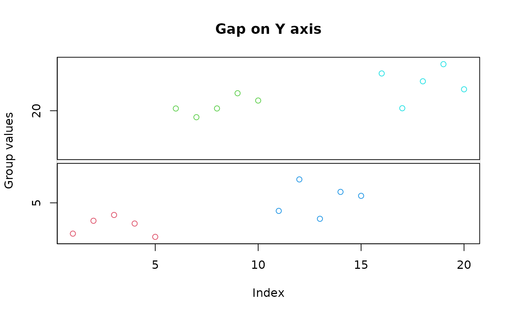
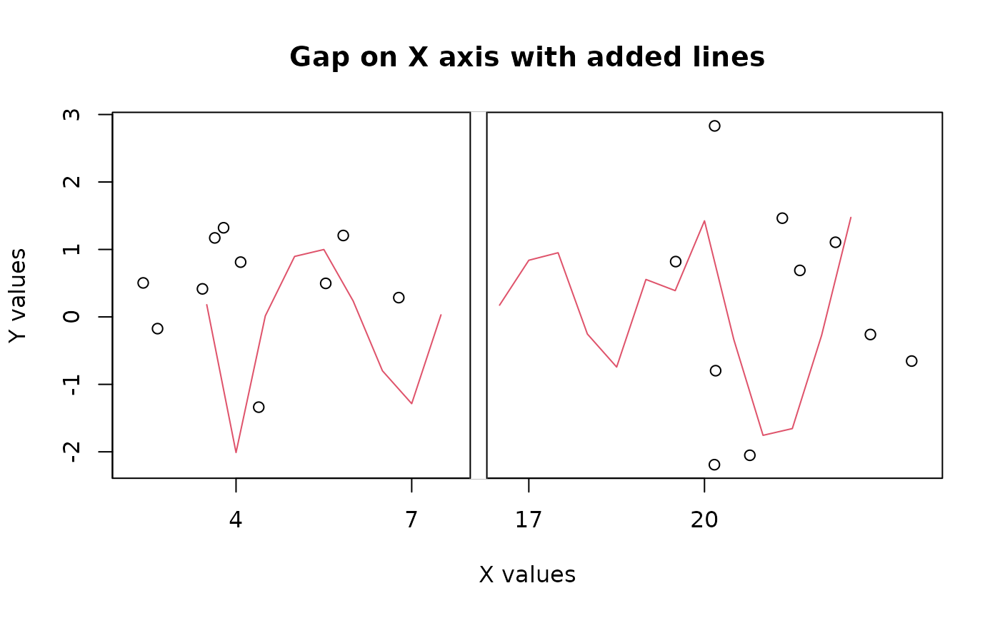
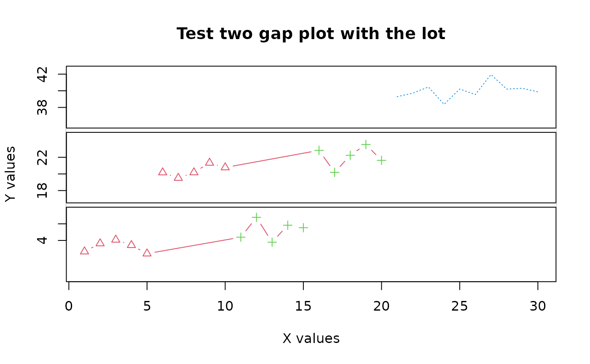

Display a plot with one or two gaps (missing ranges) on one axis
gap.plot.RdDisplays a plot with one or two missing ranges on one of the axes.
Arguments
- x,y
data values
- gap
the range(s) of values to be left out
- gap.axis
whether the gaps are to be on the x or y axis
- bgcol
the color of the plot background
- breakcol
the color of the "break" marker
- brw
break width relative to plot width
- xlim,ylim
the plot limits.
- xticlab
labels for the x axis ticks
- xtics
position of the x axis ticks
- yticlab
labels for the y axis ticks
- ytics
position of the y axis ticks
- lty
line type(s) to use if there are lines
- col
color(s) in which to plot the values
- pch
symbols to use in plotting.
- add
whether to add values to an existing plot.
- stax
whether to call staxlab for staggered axis labels.
- ...
arguments passed to plot and points.
Details
Displays a plot omitting one or two ranges of values on one axis. Typically used when there is a relatively large gap or two in the overall range of one set of values, often because of outliers. The function warns the user if any values may have been omitted by being in the "gap". See axis.break for a brief discussion of plotting on discontinuous coordinates.
To add more data series to a gap plot, call gap.plot with add = TRUE. The same gap and gap.axis arguments as in the initial call must be passed or the data will not be displayed correctly. Remember to pass an explicit xlim or ylim to the initial call if the added data exceed the range of the data initially displayed. Also remember to subtract the width(s) of the gap(s) if you are passing an explicit xlim or ylim.
Because the gaps take up some space, it is possible to have a data value that is just below a gap plotted in the gap. The answer is to make the lower gap limit a little higher if this is a problem.
If at least four values are passed in gap, the first four will be used to calculate two "gaps" in the plot instead of one. The function does not check whether these values are sensible, so it is quite easy to ask for a very silly plot.
The default ticks are usually not ideal, and most users will want to pass their own tick positions and perhaps labels. Note that lines appears to use only the first col and lty argument value, so if you must have lines with different colors and types, use add=TRUE and add them separately (see the third example for the problem and the solution).
Author
Jim Lemon and Ben Bolker (thanks to Zheng Lu for the "add" idea, and Art Roberts for helping to get the gaps right.)
Examples
twogrp<-c(rnorm(5)+4,rnorm(5)+20,rnorm(5)+5,rnorm(5)+22)
gpcol<-c(2,2,2,2,2,3,3,3,3,3,4,4,4,4,4,5,5,5,5,5)
gap.plot(twogrp,gap=c(8,16),xlab="Index",ylab="Group values",
main="Gap on Y axis",col=gpcol)

gap.plot(twogrp,rnorm(20),gap=c(8,16),gap.axis="x",xlab="X values",
xtics=c(4,7,17,20),ylab="Y values",main="Gap on X axis with added lines")
gap.plot(c(seq(3.5,7.5,by=0.5),seq(16.5,22.5,by=0.5)),
rnorm(22),gap=c(8,16),gap.axis="x",type="l",add=TRUE,col=2,)

gap.plot(twogrp,gap=c(8,16,25,35),
xlab="X values",ylab="Y values",xlim=c(1,30),ylim=c(0,42),
main="Test two gap plot with the lot",xtics=seq(0,30,by=5),
ytics=c(4,6,18,20,22,38,40,42),
lty=c(rep(1,10),rep(2,10)),
pch=c(rep(2,10),rep(3,10)),
col=c(rep(2,10),rep(3,10)),
type="b")
gap.plot(21:30,rnorm(10)+40,gap=c(8,16,25,35),add=TRUE,
lty=rep(3,10),col=rep(4,10),type="l")
